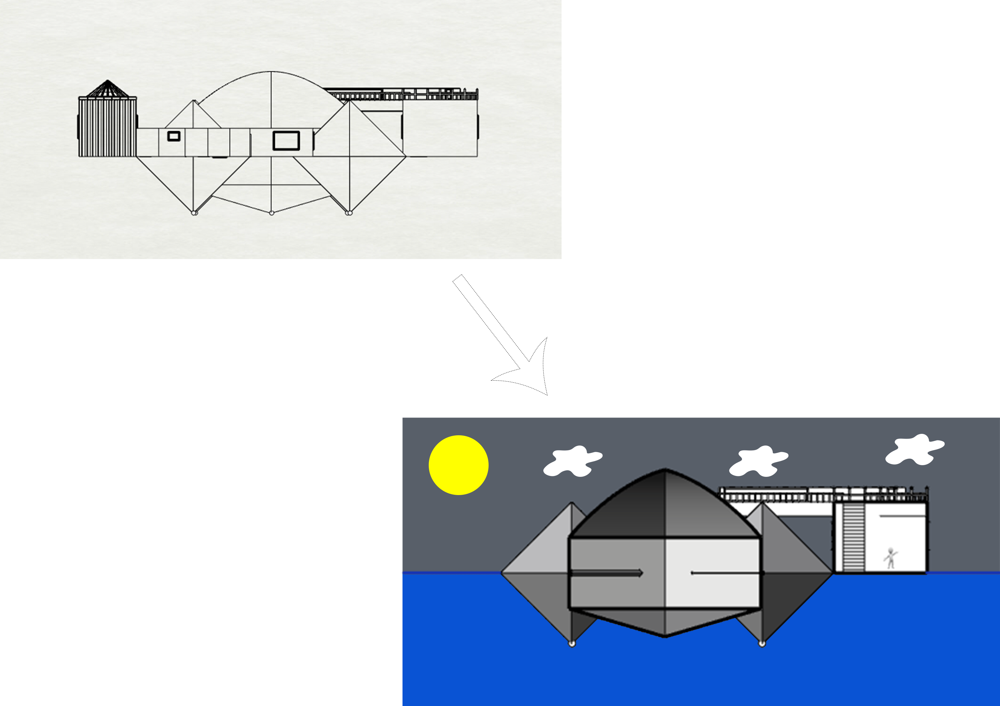

This movie is about the fifth elements to help four elements to defeat the great devil.


The shape symbolizes five elements, the fifth leading the remaining four, and the fifth is a human miracle, so its appearance is a Pythagorean theorem. This theorem can be proved by numerous ways. It symbolizes infinite possibilities and symbolizes miracles. It also symbolizes that as long as humans use their brains, they can create unexpected things and do impossible things. On the other hand, this shape is also like the Chinese square Tai Chi, the so-called Tai Chi, is from the universe to clarify the infinite and Tai Chi, and even the process of everything. It also symbolizes the creation of all possibilities, namely, hope and miracles.

